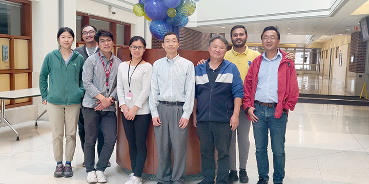
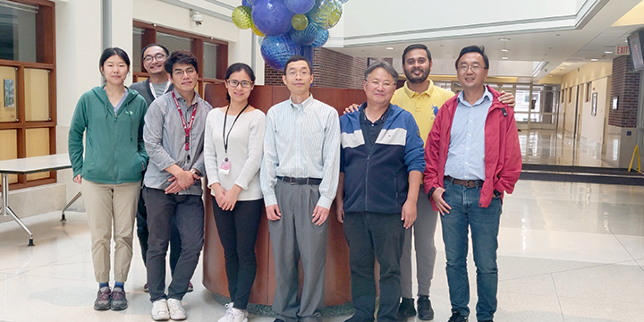
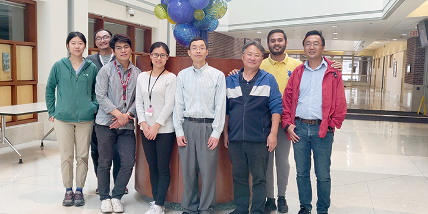
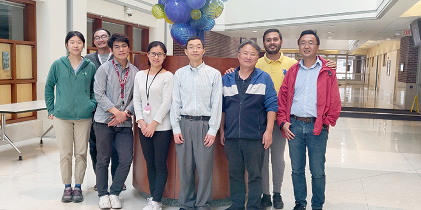

Welcome to the website of Dr. Charlie Dong laboratory in the Department of Biochemistry, Molecular Biology and Pharmacology at Indiana University School of Medicine! The Dong Lab is doing cutting-edge research on alcohol and metabolic dysfunction associated liver diseases, fibrosis, diabetes, obesity, aging, and cancer.
We are using the state-of-the-art technologies such as genomics, epigenomics, transcriptomics, metabolomics, and gene editing to explore fundamental biology and drug discovery.
Dr. Dong has received a new NIH grant to study tumor suppressor genes in cancers! ⭐⭐⭐
Check our most recent publications:
Autophagy related 14 protects against liver injury by inhibiting multiple cell death pathways. Kim HG, Huang M, Wang S, Zhang Y, Li K, Liu S, Dong C, Yang X, Cho JH, Chowdhury K, Stein B, Wan J, Dong XC.eGastroenterology. 2025 Oct 13;3(4):e100181. doi: 10.1136/egastro-2025-100181. eCollection 2025.
Steatotic liver disease and cancer: from pathogenesis to therapeutic targetsSteatotic liver disease and cancer: from pathogenesis to therapeutic targets. Yang Z, Liu Z, Liu W, Dong XC.eGastroenterology. 2025 Sep 12;3(3):e100218. doi: 10.1136/egastro-2025-100218. eCollection 2025.
Steatotic liver disease and cancer: from pathogenesis to therapeutic targets SIRT6 Is a Key Regulator of Pancreatic β-Cell Survival and Function During Aging. Park J, Lokuge SD, Huang M, Wang S, Liu S, Liang J, Katturajan R, Marakovits C, Yang Z, Wan J, Dong XC.Diabetes. 2025 Nov 1;74(11):1976-1991. doi: 10.2337/db25-0116.
The Patatin-Like Phospholipase Domain-Containing 3 148M Variant Exacerbates Alcohol-Induced Liver Injury and Tumorigenesis in Mice. Cho JH, Kim HG, Huang M, Wang S, Liu S, Lu A, McCrocklin K, Zhang Y, Fang Z, Wang J, Liu W, Wan J, Dong XC.Am J Pathol. 2026 Jan;196(1):209-222. doi: 10.1016/j.ajpath.2025.04.014. Epub 2025 May 9.
Targeting the ER stress sensor IRE1 protects the liver from fibrosis through the downregulation of the proteostasis factor P4HB/PDIA1. Hazari Y, Habbouche L, Garcia Lopez VA, Urra H, Diaz J, Tamburini G, Milani M, Durand S, Aprahamian F, Baxter R, Huang M, Dong XC, Gonzalez-Rojas L, Francisco SJ, Tapia-Dufey I, Vihinen H, Ratziu V, Foufelle F, Hengstler JG, Jokitalo E, Maiers JL, Plate L, Kroemer G, Bailly-Maitre B, Hetz C.Hepatology. 2026 Jan 1;83(1):75-93. doi: 10.1097/HEP.0000000000001335. Epub 2025 Apr 8.
X. Charlie Dong © 2026 | IU School of Medicine